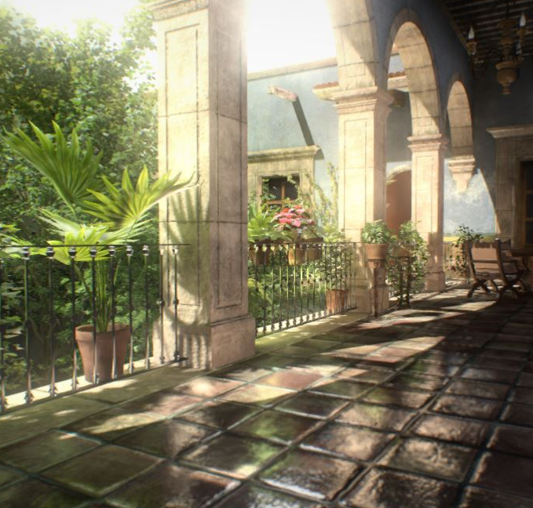

NVIDIA VXGI is a framework that can be used to implement voxel-based lighting effects in a real-time renderer. It provides means to quickly compute a voxel representation of a mesh scene and use that representation with Voxel Cone Tracing for diffuse and specular global illumination, ambient occlusion, and high-quality area lighting. Adding these effects to the scene greatly improves the realism of the rendered images. Besides these lighting effects implemented inside VXGI, applications can use the voxel data to query visibility along arbitrary cones or lighting that comes from arbitrary cones in order to build custom rendering effects, such as refractive materials or light map baking.
The VXGI library calculates multi-bounce diffuse and single-bounce specular indirect illumination effects using voxel cone tracing method. Caustics (specular or refracted indirect illumination) are not supported.
VXGI can be configured to only compute ambient occlusion using voxel cone tracing, without indirect illumination. This mode is called VXAO. Compared to screen-space methods, VXAO results have larger range, highlight surface detail better, and do not depend on the view direction or small changes in camera position. However, VXAO is not so good at capturing small-scale occlusion, so it is recommended to combine its results with a small-radius screen space solution. For convenience, VXGI library includes an SSAO pass as well.
Finally, VXGI implements a high-quality solution for planar area lights with shadows, called VXAL for Voxel Area Lighting. Analytic irradiance calculations using the Linearly Transformed Cosines method are combined with voxel cone tracing and screen space tracing for shadows. Compared to processing area lights through emittance voxelization, this method delivers much more stable lighting for moving and resizing lights, with less light leaking and sharper shadows, and works off the opacity voxels only, i.e. there is no additional voxelization cost compared to VXAO.
VXGI works with rendering APIs (Direct3D 11 and 12) through an abstraction layer called NVRHI (NV Rendering Hardware Interface). Applications need to implement the code for translation from this interface to actual rendering API calls or to their own abstraction layers. Sample translation layers for D3D11, D3D12, and OpenGL4 are provided. One of the primary reasons for making VXGI work through such a layer is that voxelization, a critical part of VXGI, is drawing application geometry using merged rendering state: some shaders and resources come from VXGI, and other parts come from the application. So VXGI provides a description of what rendering state it needs, and the application has to merge that with its own requirements.
Browse Documentation
{kind=link}